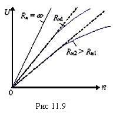

где Rя- сопротивление обмотки якоря; Rн- сопротивление нагрузки.
Откуда выходная характеристика
|
U = Eя/(1 + Rя/Rн) = СеФеn/(1+ Rя/Rн).

Характеристики тахогенератора U = f(n) при Фв = const и Rя = const являются практически линейными (рис. 11.9). Однако эти тахогенераторы можно применять только при неизменной нагрузке, т. е. совместно с индикатором или другим устройством, на который рассчитан данный тахогенератор. Крутизна выходной характеристики ТГПТ колеблется в пределах от 3 до 1000 мВ/об/мин (меньшие значения относятся к ТГПТ с постоянными магнитами). Номинальные частоты вращения тахогенераторов постоянного тока составляют 1000...10000 об/мин, но наиболее распространены машины с частотой вращения n = 1500...3000 об/мин.
|